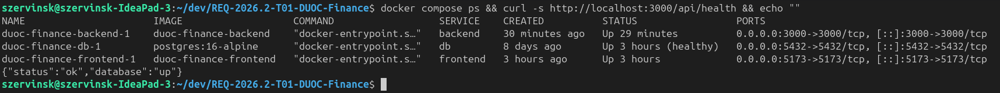
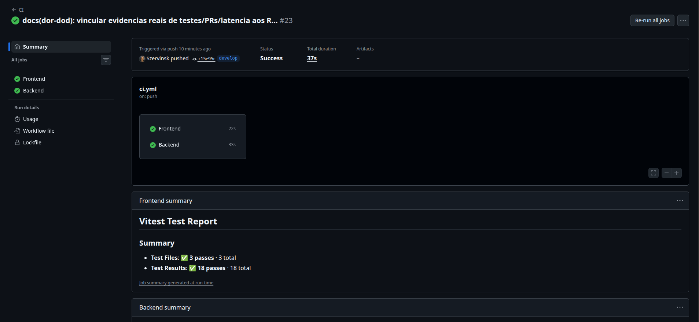

Entrega 3 — Ponto de Controle 3 (Unidade 3)¶
Ponto de Controle 3 — Consolidação dos Incrementos 1 e 2 e Organização do Backlog
- Disciplina: Requisitos de Software — Semestre 2026.2 (UnB - FGA)
- Equipe: Cascata Ágil
- Projeto: DUOC Finance (Gestão Financeira, Operacional e RH de Obras)
- Cliente Parceira: Maria Beatryz Vieira de Sousa (Auxiliar Administrativa e Ponto Focal do Cliente na DUOC Arquitetura e Engenharia)
- Data de Fechamento do Marco: 17 de Novembro de 2026 (publicação no GitHub Pages até as 08h; apresentações em 17 e 19/11/2026)
- Status da Entrega: Em Fechamento para Submissão (PC3)
- Fase do Ciclo RAD: Fase 3: Construção Rápida (Rapid Construction) — Incrementos 1 e 2
- Gravação da Apresentação: Espaço reservado — gravação técnica realizada em 16/11/2026; link do vídeo será inserido após publicação.
1. O Que Foi Solicitado (Requisitos da Entrega 3)¶
Para o terceiro marco avaliativo (Ponto de Controle 3 / Unidade 3), além da evolução incremental do software em ambiente integrado, a entrega consolida as adequações solicitadas nas revisões docentes da Unidade 2 e as práticas de Organização e Atualização do Backlog (Capítulo 12):
- Organização e Atualização Contínua do Escopo (Cap. 12 & DEEP):
- Centralização em Fonte Única Canônica (Catálogo Integrado sem listas paralelas ou divergentes).
- Explicitação de refinamento progressivo (Iceberg Backlog), critérios DEEP, dependências e rotina de propagação de mudanças.
- Boas práticas operacionais no GitHub (fluxo de branches
main/develop, templates de Issue/PR, commits semânticos e CI/CD).
- Rastreabilidade de Execução e Evidências Reais:
- Vinculação dos Requisitos Funcionais aos incrementos RAD, Issues e Pull Requests no GitHub, com status atualizado (
Concluído,Em Dev,Pronto DoR,Aguardando Ciclo,Pós-MVP). - Evidências visuais das telas e fluxos funcionais executados em ambiente Docker/Staging.
- Vinculação dos Requisitos Funcionais aos incrementos RAD, Issues e Pull Requests no GitHub, com status atualizado (
- Evolução do Produto (Incrementos 1 e 2):
- Incremento 1 (Concluído): Gestão de Colaboradores (
RF01–RF03), Autenticação e Controle de Acesso RBAC (RF13,RF17,RF18) e Módulo Móvel de RVT em Campo (RF04,RF19,RF22). - Incremento 2 (Em Desenvolvimento): Deliberação e retificação de apontamentos (
RF32,RF35) e submissão/deliberação de reembolsos e adiantamentos (RF07,RF08,RF28,RF29).
- Incremento 1 (Concluído): Gestão de Colaboradores (
- Apresentação e Vídeo Técnico: Gravação audiovisual com demonstração do sistema em execução e participação distribuída dos 6 integrantes da equipe.
2. O Que Foi Desenvolvido e Entregue (Artefatos e Código)¶
A tabela abaixo consolida os principais artefatos de documentação, governança e engenharia entregues até o Ponto de Controle 3:
| Eixo | Artefato / Módulo | Síntese do Conteúdo Entregue | Link Direto |
|---|---|---|---|
| Organização (Cap. 12) | Organização & Atualização do Backlog | Fonte Única Canônica, anatomia dos cards, refinamento progressivo (DEEP / Iceberg), tratamento de dependências, propagação de mudanças e checklist de conformidade. | Acessar Organização |
| Processo GitHub | Boas Práticas no GitHub | Fluxo oficial de branches (main, develop, feat/*, gh-pages), templates em .github/, Conventional Commits, revisão de PRs e pipelines CI/CD. |
Acessar Boas Práticas |
| Requisitos | Catálogo Integrado de Requisitos | 91 itens (40 RFs, 31 RNs, 20 RNFs) em cards compactos com status real por incremento, links para Issues/PRs, filtro Execução (Ciclo) e evidências visuais. |
Acessar Catálogo |
| Rastreabilidade | Matrizes e Pirâmide Interativa | Rastreabilidade bidirecional (OG ➔ OE ➔ CAR ➔ RF ➔ RN/RNF) e matriz-síntese de cobertura do produto. |
Acessar Rastreabilidade |
| Priorização & MVP | Priorização & Escopo do Produto | Abas metodológicas de Valor (VB) e Esforço (EC), fórmula corrigida, seletor dinâmico (Características vs Matriz 4×4), retificação assistida (RF06 × RF21 × RF35) e registro de validação. |
Acessar Priorização |
| Planejamento | Cronograma e Detalhamento de Ciclos | Calendário semestral interativo desacoplado do calendário acadêmico, marco da gravação em 16/11/2026 e atualização do Ciclo 1 (Concluído) e Semana 11 (Em Andamento). |
Acessar Cronograma |
| Código (Incr. 1) | Gestão de Colaboradores, Auth/RBAC e RVT | Backend NestJS + Prisma/PostgreSQL (rotas /api/auth, /api/rvt, /api/health) e Frontend React/Vite com Docker Compose (PR #167 e PR #170). |
Acessar Repositório |
| Governança | Atas e Lições Aprendidas | Registro das decisões da equipe e gravação da apresentação da Entrega 3 na Reunião 07 (16/11/2026). | Acessar Atas |
3. Vídeo da Apresentação da Entrega 3¶
A gravação oficial do Ponto de Controle 3 (realizada em 16/11/2026) apresenta a reorganização documental do portal, o catálogo integrado de requisitos com rastreabilidade ao GitHub, a metodologia de priorização do MVP, o planejamento dos ciclos RAD e a demonstração prática do sistema em execução local via Docker.
Gravação Oficial da Apresentação¶
Caso o player incorporado acima apresente restrições de rede ou dispositivo, utilize o acesso direto: Assistir à Apresentação da Entrega 2 no YouTube (Link Direto: youtu.be/JF_cYRJM7vk)
Distribuição dos Temas por Integrante¶
| Integrante | Matrícula | Papel no Projeto | Tópico Apresentado no Vídeo (PC3) |
|---|---|---|---|
| Matheus Ribeiro Szervinsk | 231011749 | Scrum Master (SM), Co-PO e Engenheiro de Requisitos | Visão Geral do Produto, Navegação, Ciclos RAD e Matriz de Rastreabilidade. |
| Gustavo Bonifácio | 241025659 | Gestão de Qualidade (QA) e DoR/DoD | Organização do Backlog (Cap. 12) e Boas Práticas no GitHub. |
| Matheus Saraiva Camargo | 241011475 | Arquiteto de Software e Banco de Dados | Catálogo Interativo de Requisitos, Filtros, Evidências e Pirâmide/Rastreabilidade. |
| Giovana Ferreira | 231034707 | Engenheira Frontend e Designer UI/UX | Escopo do Produto, Avaliação de Valor (VB) e Esforço (EC), Matriz 4×4 e Validação. |
| Eric Araújo | 200064053 | Product Owner (PO) e Engenheiro de Requisitos | Cronograma, Desacoplamento Metodológico e Método de Atualização de Requisitos no RAD. |
| Paulo Nery | 221008740 | Engenheiro Backend | Demonstração do Incremento 1 entregue (Colaboradores, Auth/RBAC, RVT) e escopo do Incremento 2. |
Evidências de Execução e Qualidade (Staging/Docker, Testes e CI/CD)¶


Containers Docker ativos (db, backend e frontend) Visão Geral (Dashboard) após login autenticado
Visão Geral (Dashboard) após login autenticado
 Módulo de Apontamentos de Campo (RVT) em execução
Módulo de Apontamentos de Campo (RVT) em execução
 107/107 testes backend aprovados
107/107 testes backend aprovados
 18/18 testes frontend aprovados
18/18 testes frontend aprovados


Workflows CI/CD e Deploy aprovados no GitHub Actions4. Considerações e Próximos Passos¶
- Consolidação do Incremento 2: Finalizar a implementação e os testes das rotas de deliberação/retificação (
RF32,RF35) e fluxo de reembolsos e adiantamentos (RF07,RF08,RF28,RF29). - Validação Formal com a Cliente: Conduzir a sessão de homologação do corte final do MVP (
31 RFs/9 Pós-MVP) e dos fluxos navegáveis em Staging com Maria Beatryz. - Preparação para UAT e Entrega 4 (PC4): Iniciar os 12 requisitos prontos (DoR) de fechamento financeiro (
RF05,RF06,RF27) e contratos/centros de custo (RF09–RF11,RF33,RF34,RF37–RF40).
Histórico de Versão¶
| Versão | Data | Descrição | Autor(es) | Revisor(es) |
|---|---|---|---|---|
0.1 |
07/09/2026 | Criação da página com alerta de documento em desenvolvimento | Matheus Ribeiro | Eric Araújo |
1.0 |
16/11/2026 | Estruturação completa da Entrega 3 (PC3) com matriz de artefatos, espaço reservado para o vídeo oficial e distribuição dos temas por integrante. | Matheus Ribeiro Szervinsk | Equipe Cascata Ágil |